| 日付 | 2018年5月4日（金） - 2018年5月6日（日） | ||||
|---|---|---|---|---|---|
| 山域 | 中央アルプス | ||||
| メンバー | 家族（妻、長女・7歳、長男・4歳） | ||||
| 山行形態 | 子連れ2泊3日ホテル泊 | ||||
| アクセス | 車 | ||||
| ルート |
|
今年のGWはどの山に登ろうか、いろいろ検討し南木曽岳に目星を付ける。
木曽山脈の中心部から少し外れたところにあり、
それなりに登りごたえのありそうな山だ。
この山行に備えて4月は3度山に登り、トレーニングをしてきた。
計画の初日は大雨のため1日キャンセルし、2泊3日の予定で木曽に向かう。
1日目
本日は不安定な天気。予報はころころ変わっていたが、最後は晴予報。
しかし現地に着くと今にも雨が降り出しそうだ。
本日は田立の滝に行く予定だったが諦めて、妻籠宿を見学することにする。
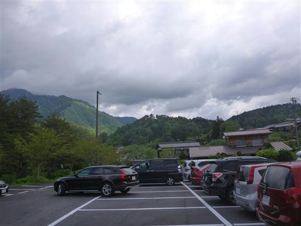
妻籠宿の有料駐車場に車を停めて、側の神社にお参り。
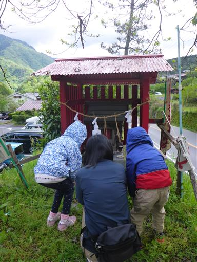
妻籠宿に向かう階段を登って行く。
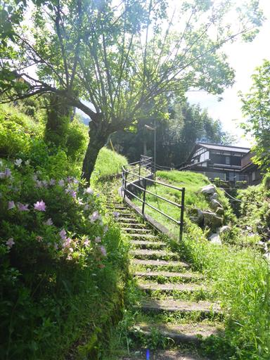
妻籠宿に到着。中山道の宿場町で、伝統的な町並みが最もよく保存されている町だ。
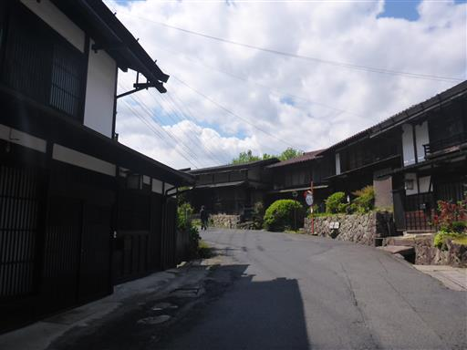
藤の花が咲いている。
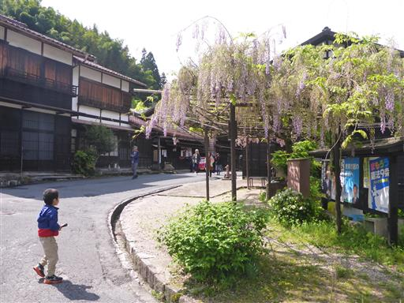
こちらは道端にスズランの花。
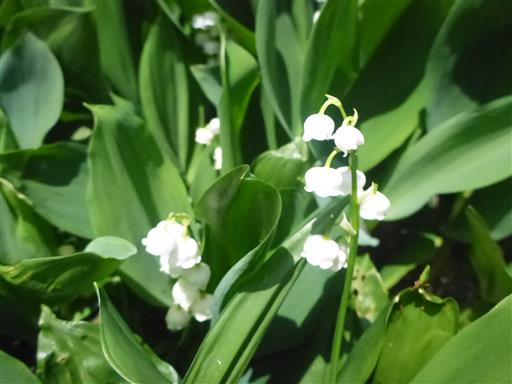
水車小屋。水の流れを受けて回転している。
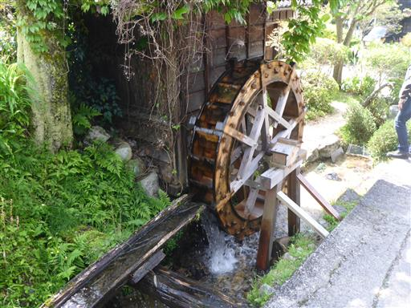
まだ10時前なのだが、それなりに観光客が多い。
妻籠宿とお隣の馬籠宿はこの辺りを代表する観光地だ。
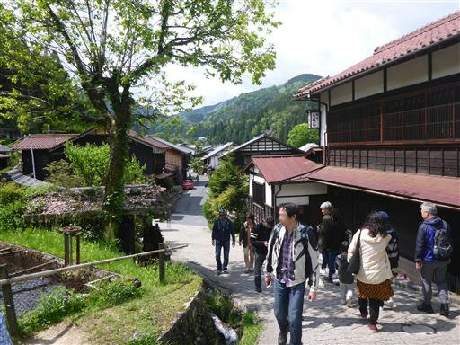
橋を見ると渡って遊びだす。
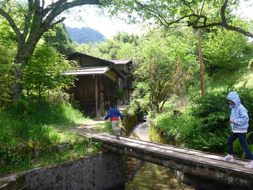
熊谷家住宅。内部は公開されていて、土間や囲炉裏を見学できる。
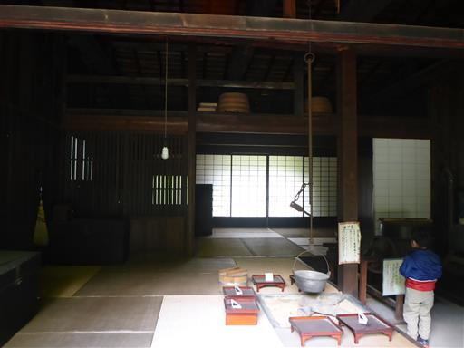
鯉岩に登ってみる。中山道三名石の1つで鯉の形に似ていたらしいが、
1891年の地震で形が変わってしまったらしい。
今では木が繁茂して岩の形もほとんど見えない。
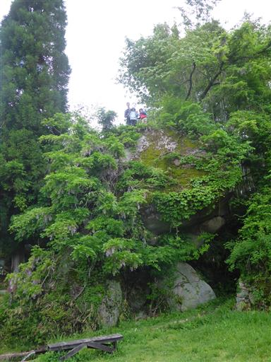
鯉岩の上から妻籠宿の町並みを見下ろす。
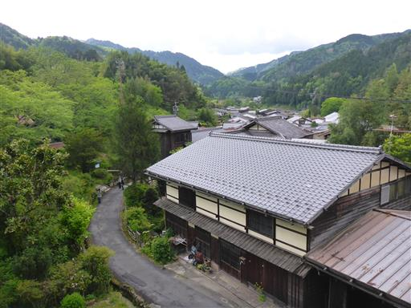
町の中心部にやって来ると観光客が増えてくる。
それなりに激しい雨が降ってくる。
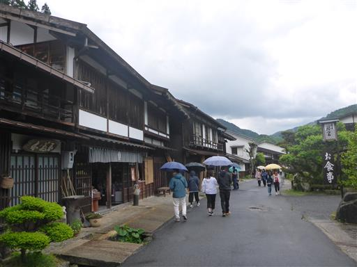
周囲は土産物屋や食べ物屋が軒を連ねている。
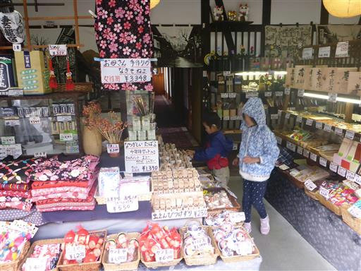
こちらは櫛屋。木曽の特産は木工品で、意匠を凝らした櫛が多数売られている。
高いものは一万円以上だ。
土産物屋で箸やキーホルダーなどを買いながら歩いていく。
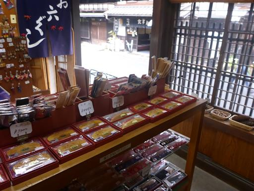
しばらく歩いていると青空が広がってくる。
このまま晴れてくれると良いのだが…
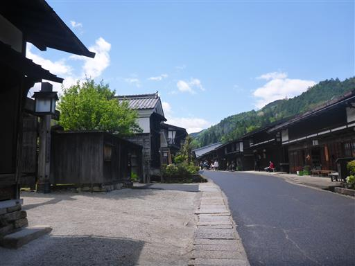
妻籠宿の美しい風景。
GWはさすがに日本人が多いが、平日は外国人観光客が多いらしい。
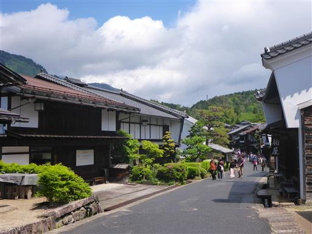
はぐれた妻と娘がなかなかやって来ないため、息子と灯篭前で待つことにする。
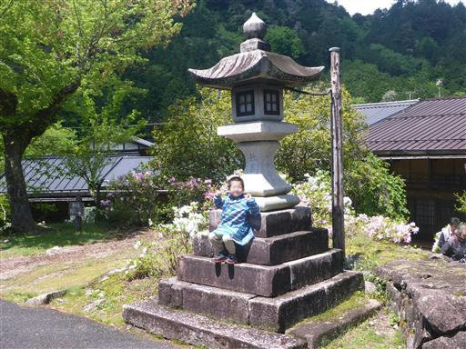
こちらは寺下の町並み。妻籠宿は昔の姿が良く保存されているが、
最初に保存運動が行われたのが寺下地区だ。
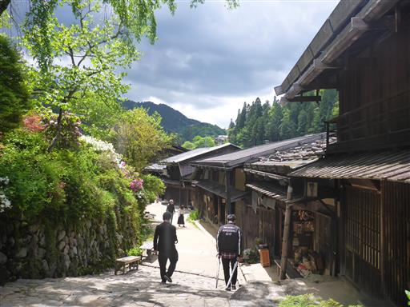
鹿の角が置かれている。田んぼに落ちていたものらしい。
こんな立派な角がよく2本もそろって見つかったものだ。
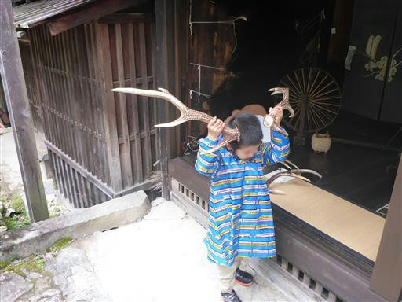
お昼になったので「手打そば よしむら」で昼食をとる。
人気店で列ができていたが、少々待つだけで席に付くことができた。
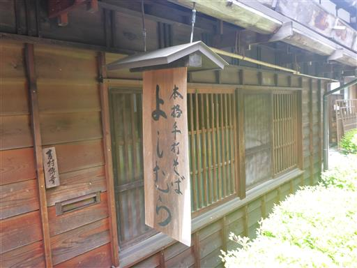
妻籠宿の観光を終えたら駐車場の側にある川の畔に下りて少し遊ぶ。
この川は木曽川の支流、蘭川でなかなかの清流だ。
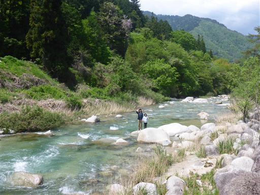
落ちるなよ。
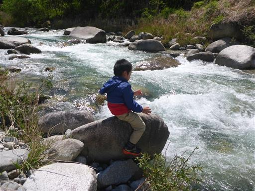
子供たちがなかなか川遊びを止めなかったが、別の川に行こうと言って
誘い出しようやく場所を移動する。辿り着いたのは寝覚の床。
少し離れた場所にある寝覚の床美術公園の無料駐車場に車を停める。
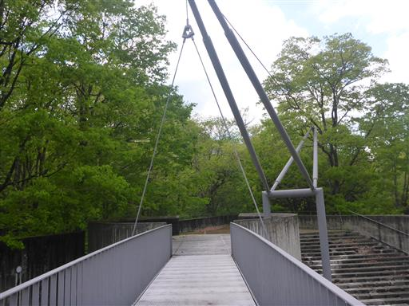
寝覚の床まではしばらく歩く必要がある。森の中の道を歩いていく。
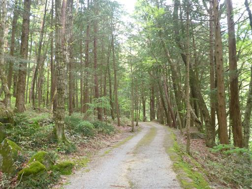
森林鉄道が展示されている。かつては木材を運搬するのに使われていたようだ。
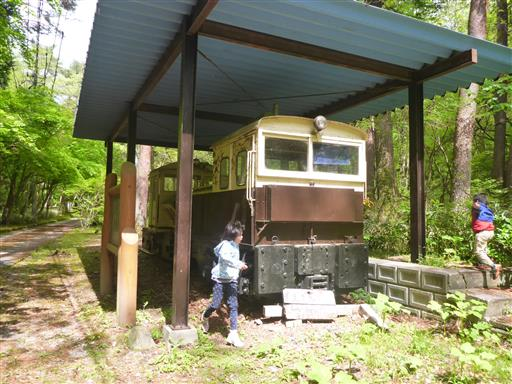
森の中から木曽川の流れが見える。
まず裏寝覚から観光しようと思っていたが、落石のため立ち入り禁止になっていた。
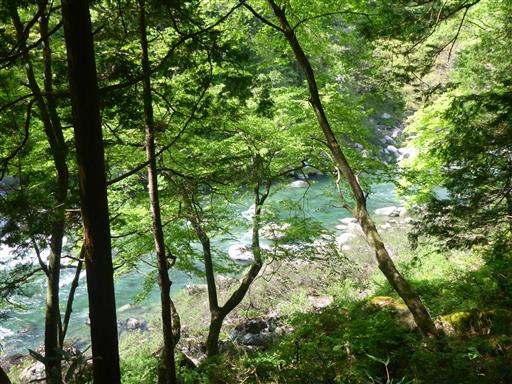
仕方がないので寝覚の床に向かう。
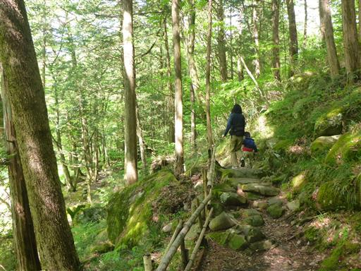
美術公園に到着。石が積まれたオブジェがたくさん並んでいる。
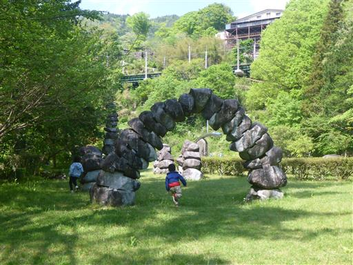
ようやく遠くに寝覚の床が見えてくる。
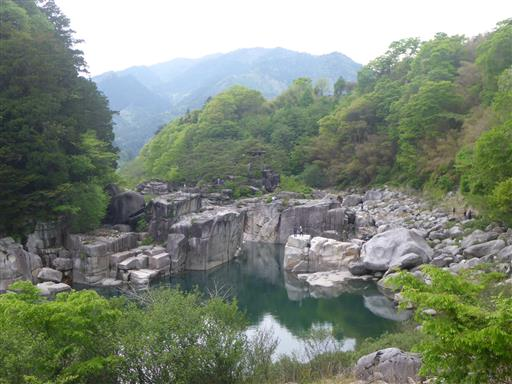
側を流れる木曽川は美しい青色。新緑と相まって素晴らしい景観だ。
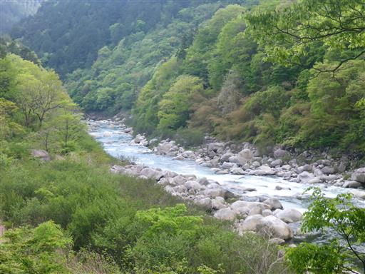
息子は景色には目もくれず、池にいる鯉の魚釣りを頑張っている。
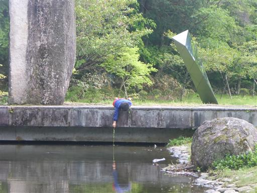
ワスレナグサだろうか？足元に青くて可憐な花が咲いている。
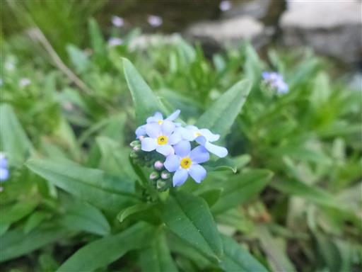
美術公園で遊んだら寝覚の床に移動する。
方状節理が見られる珍しい地形で、国の名勝に指定されている。
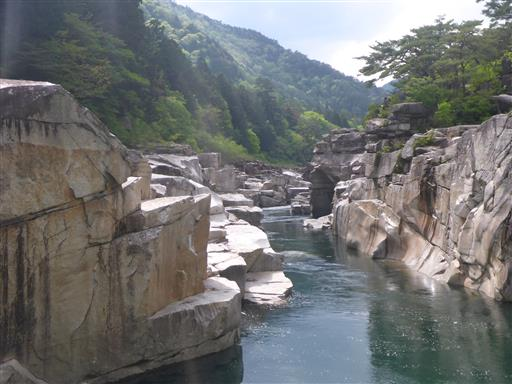
岩の下の方まで下りてみる。
目の前に広がる水面は川とは思えないほど穏やかだ。
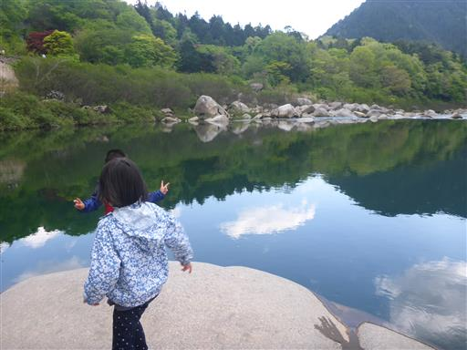
今度は高台に移動してみる。岩をよじ登って乗り越えていく。
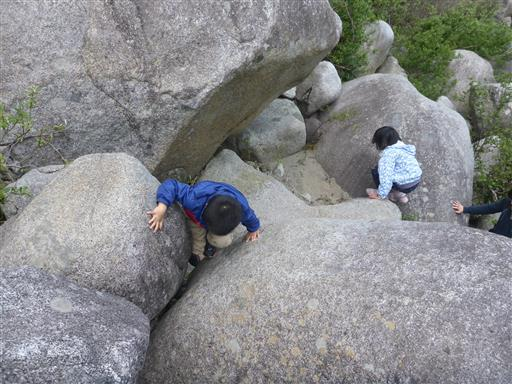
高台から望む寝覚の床。ブロック状の石が積みあがった不思議な地形だ。
下段の石は完全に水没している。
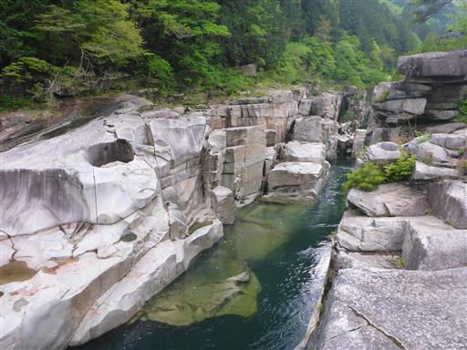
石の上に松の木が生えている。どこに根を張っているのだろう？
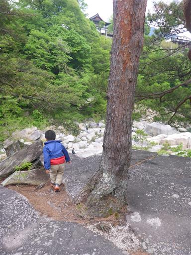
一番高い場所に浦島堂が建っている。
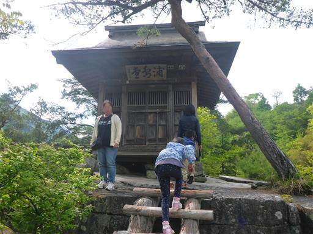
浦島堂からさらに上流方面に歩いてみるが、途中で断崖に行く手を阻まれる。
歩くだけでも楽しい観光地だ。
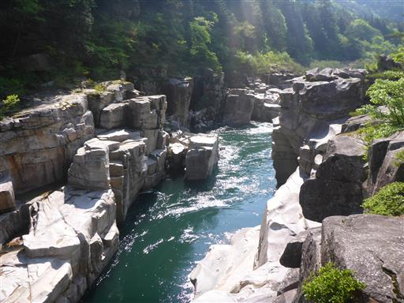
断崖から下を覗き込む人たち。落下事故は起きたことが無いのだろうか？
岩の上を移動中、息子が水たまりにはまり靴が濡れてしまったため、
本日の観光を切り上げて宿に移動することにする。
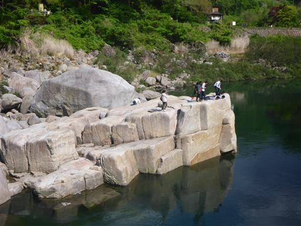